In many parts of the world, fisherfolk have been making their own nets for generations! It's an enjoyable and productive pastime ... and-with some knowledge, a supply of string, and a couple of handmade tools-you can start tying your own meshwork right in your living room or back yard. I learned the art from old-timers, who taught me to "knit" a net ... that is, to build a series of "meshes" to create an overall pattern. I also learned that netmaking can be a great family activity ... especially when everyone keeps in mind the delicious fresh fish that will soon be landed in those interlocking strands and brought to the dinner table.
Nets don't have to be used for fishing, of course, but whether you make one to catch walleye or to serve as a decorative wall hanging, you'll have to knit it from some type of string. Kite line, baling twine, upholstery sewing thread, package cord, and even crochet yarn are all good candidates for webbing, although the intended use of the finished net will eliminate some choices and recommend others. (For good-quality, lightweight, strong, kink- and rot-resistant cord, however, Dacron or polypropylene are likely the best bets.)
You'll also have to decide the actual size of whatever twine you pick: just remember, when doing so, that while thinner cords tend to cost less ... they also have less durability and strength. If you plan to land lunker bass, for example, you wouldn't make your net out of crochet yarn! (On the other hand, if that's the only sort of cordage you have available at the moment, why not use it to practice the skill for a while?)
Besides string, you'll need a gauge block or stick, and a netting needle or shuttle (shown ABOVE). You can purchase these tools from most craft outlets, or you can make them from hardwood scrap (see the accompanying sidebar to learn how).
The types of fishing equipment you can make using the block, shuttle, and string include such relatively large-scale harvesting devices as gill nets, hoop nets, and trammel nets ... and the same technique can produce good cargo nets, throw nets, hammocks, and even wall decorations. In order to master the basic method, however, it's best to start with a relatively simple (and very useful) project: producing a webbing tube that can be transformed into a dip-or landing-net. Naturally, this device also needs a frame ... so, in addition to your string and tools, you'll want either a commercially made landing-net frame (an old one that needs new netting would be fine), an adaptable existing frame (such as a discarded badminton or tennis racket), or a homemade "hoop" (perhaps fashioned from wire, or from springy or steamed wood).
To make a dip net suitable for landing a pan-sized trout, you'll need a ball of No. 9 twine, a gauge block with a circumference of about 2-1/8", and a shuttle that's about 8 " long and 3/4 " wide. In order to prevent a fish from slipping through your homemade net, you'll need to space the loops close enough together to prevent the meshes from hanging in squares. I chose to hang my loops 1" apart around the frame. I used a frame that's 18" in diameter and has a circumference of 56-1/2 ", so-at 1 mesh to the inch-there are 56 meshes around the webbing tube.
Begin the project by tying a piece of cord (it's called, appropriately enough, the starting string) to two nails set about 3 feet apart and chest high (as on a wall). Next, loosely tie the end of your netting twine to this starting string at a point near the left end (if you're a southpaw, reverse all directions).
The first row of meshes will be handgauged with slipknots, as shown in Photo 2. To tie these, just pass the shuttle behind the starting string from underneath, then up, over, and down in front. Grip the loop thus made with your left thumb and forefinger while positioning the mesh, with your second finger, about an inch from the starting string (see the diagram).
The secret to producing nets-while minimizing the waste of time and motionlies in the next moves. As you let your right hand fall to your side, thus pulling in the mesh, tilt your right wrist so the twine passes across the back of your hand. Leave it there. Then pass your shuttle up through the open mesh and around the loop, and pull it back through the hole held open by your wrist. Finally, drop your hand (the one with the needle) and tighten this-your first-knot ... which is known as a slipknot or a bight.
There's also a less rhythmic-and thus less desirable-way to produce this same knot. After making the first loop, and while holding it in your left hand, flip the twine clockwise over the same hand-up, around, and over your work-to form a loop. At this point, pass the needle, from below, around the loop and through this hole, before dropping your right hand and drawing the knot tight.
Continue the process of "form a loop, tie a knot" until you have 56 of these triangles (they're actually half-meshes, as you'll see later, but don't let that bother you now). Be sure to handle this first row of knots carefully, as they'll try to slip. (If they do, you must slide them back ... it's extra work, but necessary.) To minimize effort later on, strive for uniformity now!
When you've completed the 56 halfmeshes, simply remove the starting string from its two nails, tie its ends together, and hook it over one nail.
This webbing tube is made in one piece, without seams, so it's knitted in a spiral. Your next step, therefore, is to join the 56 half-meshes to form a circle.
With the gauge block in your left hand (as in BELOW), place the leading (narrow) edge against your last knot, with the twine passing in front of it and then over to the shuttle. Let the knot straddle the leading edge of the block. Now, pass the needle around under the block, up through your first halfmesh, and again over the top of the block. With that done, pull the mesh strand down against the block's edge, halfway between the loop knots, and hold it in place with your left thumb and forefinger.
The next pass of the shuttle takes the string around both sides of the upper loop (see ABOVE), with the twine staying above your thumb, and then back down through the hole held open by your right wrist (you did remember to lay the twine across the back of your hand on that second pass, didn't you?). Do not wrap this second pass around the block.
The ends of your first row are now tied together, and you can continue to knit around and around. The knot you're now making, incidentally, is a becket bend or sheet bend (see the diagram) if you keep the second pass above your thumb. (If it falls between the upper loop and your block, you'll produce a slipknot instead.)
Each new mesh that you make will wrap around the block with all the knots in a straight line and the "legs" straddling the leading edge (note the position of the components in Photo 3). Build the meshes near your fingertips, and slide each new one toward your palm, keeping the block about two-thirds full: This will help you maintain uniformity. As you come to the end of a row, you may find that a few meshes will tend to pull crooked. If this happens, empty the block and work on one knot at a time for two or three meshes.
Knitting nets can be a very graceful activity once you get the rhythm of the work. However, here are some pointers to ease your learning process: [1] Practice feeding just enough twine from the needle to allow your right hand to swing naturally-up, then down to your side-and to draw the loop and/or knot tight, each time, without excessive backswing. [2] On the knots' second pass, the flip-a-loop method will work on the becket bend as well as it does when you make slipknots. Furthermore, it can come in handy when you're using up the last short stretch of twine before tying on a freshly filled needle ... but remember, too, that the flip-a-loop method is not as fast as the tilted-wrist method, and is therefore generally not as practical.
Basically, in this or any other type of needlework, the shortest route to speed is unbroken rhythm. A good netting average is 15 or more knots per minute, and to reach that rate, you'll have to try for the utmost economy of movement.
Continue knitting around your net until you have 12 "stretched" meshes (count every other knot as one). Before cutting your twine, though, you'll want to make your last knot a double becket bend, which will hold better than the single variety would. To tie this variation, proceed as before ... then, on the second pass of the knot, wrap twice around the loop before pulling the string through your wrist hole.
Now, cut or untie the starting string and remove it from the top row of meshes. Use your fingers to stretch the mesh between the slipknots until they "pop" untied. Your first row of meshes will now be slightly larger than those in succeeding rows ... which is fine for a dip net. (If you feel this last-minute mesh enlargement will be a problem for other projects, simply take it into account initially and make your first, handgauged, row smaller than the others.)
To hang your net onto its frame, first space the webbing evenly around the hoop and tie it in four places. Then tie one end of your hanging twine to the frame at a point near the handle, and, again working from left to right, secure each mesh to the frame.
You'll use a standard "net hanging knot" for this job. It's merely a clove hitch with two wraps on one of the hitches (as in the diagram). Now, with the thumb and first two fingers of your left hand, hold the frame and the first mesh together (see page 144). Next, flip or drape an open loop of the shuttle twine clockwise over your left hand ... and pass the shuttle under the frame from the outside, and then up through this loop, twice. Go on to tighten this twowrap hitch, and do the entire operation just one more time ... to produce a triple wrap of twine, around the frame and mesh, which allows the mesh to slide through the wrappings. Proceed to the next tie without cutting the twine ... and, as you finish each successive knot, tighten it so it's about I inch away from the previous one. Finally, lace a drawstring into the bottom row of mesh, pull it tight, and tie it off.
That's it!
There are many rules and regulations concerning the use of nets-especially the larger, multiple-catch types-in fishing. So check with your local fish and game department before trotting off to snare some finny fare for dinner (after all, you certainly wouldn't want to have your beautiful new net confiscated shortly after you finish making it!).
But when you do use your hand-knitted mesh, you'll feel a very special satisfaction that comes from having contributed your own skill, time, and ingenuity to the success of your venture.
A 50 cents plastic ruler will serve as a gauge stick, and fine netting shuttles-made of tough, smooth, flexible plastic-are available, in various sizes, at most craft outlets (typically for less than a dollar). Many people, however prefer to make their tools, and if you're such a person, here's how you can carve your own.
An attractive, serviceable gauge stick can be fashioned from a length of lattice or a thin strip of well-smoothed hardwood, with edges that have been gently tapered (as on a knife blade). Preferences differ, however, and the author's gauge block-shown in the photographs-is a narrow wedge about 3" long, with rounded edges. Its cross section measures approximately 114" at the base, and its sides round gently to a point that's about 118" thick. The dimensions of the tool will depend on the size you want to make the mesh: Just keep in mind that the circumference of the block should approximate the length of a fully stretched mesh (see the diagram on measuring mesh to determine this) plus the size of one knot. For a 2" stretched mesh, then, the circumference should be about 2-118"... with the additional fraction depending on the size of the knot and, therefore, on the thickness of the twine. It's best to make the block from some type of splinter- and split-resistant hardwood such as hickory (the handle of an old hammer or axe would be a good choice). After shaping and sizing the block, you should sand it thoroughly... until you're sure that even the most exasperating twine won't be able to snag on it.
The netting needle or shuttle is a thin , flat, flexible strip of wood, about 118" X 314" X 8", that tapers to a slight point at one end. A U-shape is carved into the other end, forming a pair of short "legs". The pointed part looks something like a flat, three-tined fork whose outer tines curve up and in to join over a middle tine. This central "tongue" should be tapered, from its base to its tip, and pointed. (Like the gauge block, the netting shuttle should be thoroughly sanded and smoothed.)
EDITOR'S NOTE: For those of you who don't wish to make netting tools and are unable to purchase equipment locally, the Earth Guild (Dept. TMEN, 1 Tingle Alley, Asheville, North Carolina 28801) carries supplies of twine and netting needles, and will be happy to send a price list upon request.
|
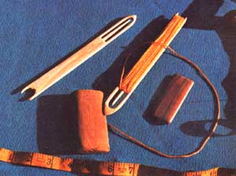 Two netting shuttles(one wound with twine) and two sizes of gauge block are shown. |
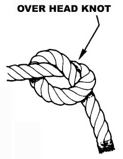 MAKING THE SECOND PASS |
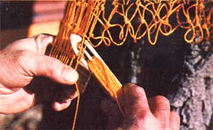 The beginning slipknot (starting string above). |
|
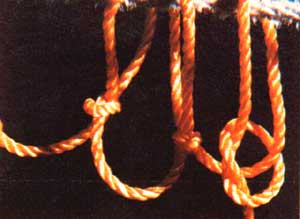 |
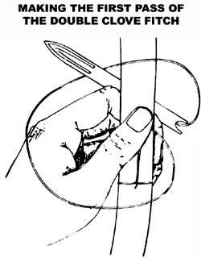 |
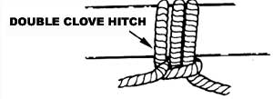 |
|
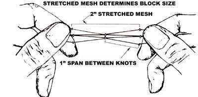 |
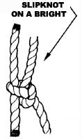 |
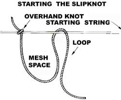 |
|
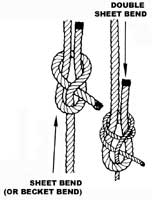 |
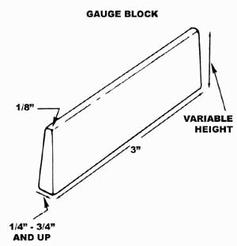 |
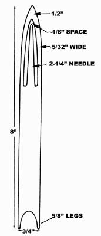 |